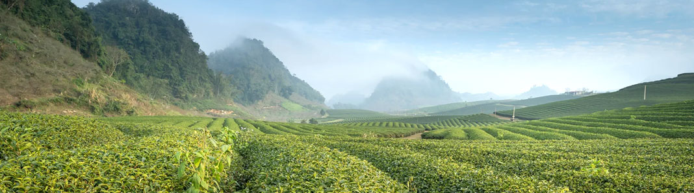
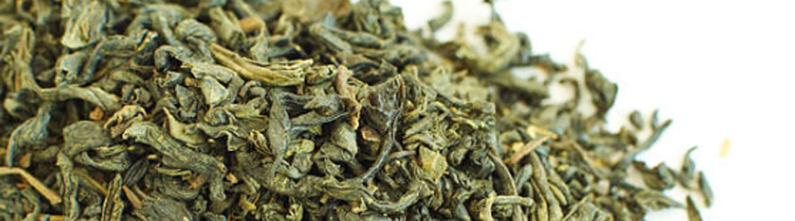

Bằng sự nỗ lực không ngừng nghỉ, trải qua hơn 10 năm xây dựng và phát triển trong lĩnh vực trà Thái Nguyên, tháng 6/2017, công ty TNNHH Tân Cương Xanh chính thức kỉ niệm 20 năm thành lập (1997-2017). Trong 20 năm qua, thương hiệu trà Tân Cương Xanh đã ngày càng đi sâu vào thị trường trà Việt nói riêng và thế giới đồ uống nói chung.
Với mục tiêu mang đến thị trường một sản phầm trà mang thương hiệu Thái Nguyên "sạch" chính hiệu cũng như sự trăn trở về sự phát triển của thị trường chè Việt Nam, cách đây 10 năm trên thị trường trà Việt, người con ưu tú đó đã thành lập một công ty chuyên sản xuất và phân phối về trà sạch mang thương hiệu "Tân Cương Xanh".
Với phương châm "Uy tín chất lượng sản phẩm là mục tiêu số 1", công ty TNHH Tân Cương Xanh đã luôn nỗ lực cả về nhân lực, vật lực, xây dựng uy tín thương hiệu, niềm tin với khách hàng thông qua những sản phẩm của công ty. Cùng với sự tín nhiệm của khách hàng vào sản phẩm của Tân Cương Xanh trong thời gian qua, Tân Cương Xanh đã không những phát triển thành một công ty vững mạnh trong ngành trà Thái Nguyên ngon Việt Nam đạt được Cúp Vàng thương hiệu Doanh Nhân Tinh hoa Đất Việt và Thương hiệu vàng Uy tín... Từ đó tạo nên động lực để Tân Cương Xanh phấn đấu để trở thành một trong những tập đoàn sản xuất, chế biến và cung cấp trà hàng đầu Việt Nam và thế giới.
Sản phẩm của công ty đạt đầy đủ tiêu chuẩn vệ sinh an toàn của Chi Cục Vệ Sinh An Toàn Thực Phẩm của Thái Nguyên - của Chi cục Hà Nội. Đạt tiêu chuẩn xuất khẩu Chicago - Hoa Kì. Trà Tân Cương một loại đồ uống nổi tiếng trong ẩm thực của người Việt Nam có hương thơm cốm dịu dàng đặc trưng, màu nước xanh trong, sánh và bền, vị chát dịu, uống xong có hậu ngọt lắng sâu trong vị giác người thưởng thức. Sản phẩm trà Tân Cương Thái Nguyên của nhà máy có tác dụng giảm nhiệt, giảm béo, trị tăng huyết áp và phòng chất phóng xạ, chống ung thư... Với phương châm "chất lượng sản phẩm là mục tiêu số 1", Công ty TNHH Tân Cương Xanh không ngừng phấn đấu để trở thành một trong những tập đoàn sản xuất, chế biến và cung cấp trà hàng đầu Việt Nam và thế giới.
